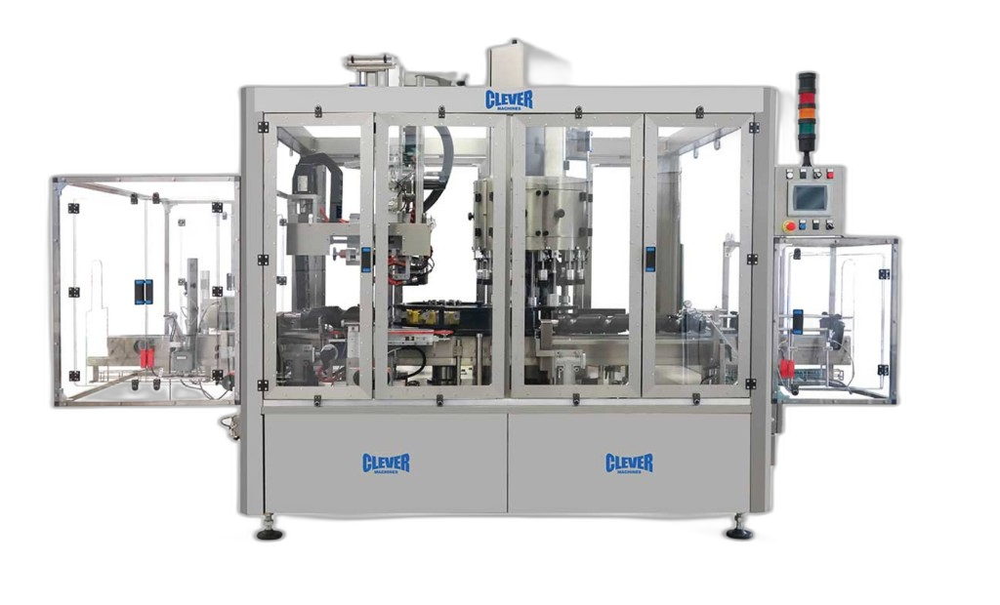
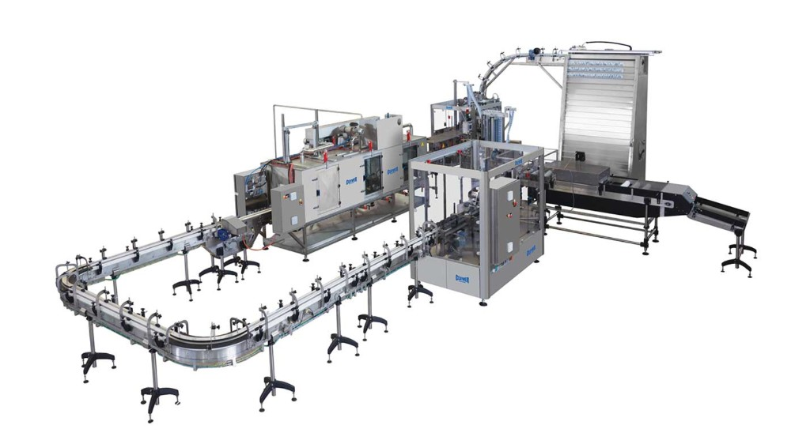

Pełne pokrycie 360°
360°
Etykieta obejmuje całe opakowanie bez szwów i przerw — maksymalna powierzchnia na grafikę i komunikację marki.
Sleevowanie to proces nakładania folii termokurczliwej w formie rękawa na opakowanie i obkurczania jej w tunelu grzewczym. Etykieta termokurczliwa obejmuje opakowanie w pełni — 360° — i sprawdza się przy nieregularnych kształtach butelek, kubków i innych formatów.
Od aplikatora rękawa po tunel obkurczający: folia dopasowuje się do profilu produktu, zapewniając estetykę, trwałość w wilgoci i możliwość zabezpieczenia przed manipulacją (tamper-evident) bez dodatkowych elementów.

Linia do sleevowania · aplikator rękawa · tunel obkurczający
Wartości orientacyjne — zależne od konfiguracji linii i formatu opakowania.
01 Problem
Marki potrzebują opakowań, które przyciągają wzrok z każdej strony i budują zaufanie konsumenta. Sleevowanie — nakładanie etykiet termokurczliwych — rozwiązuje problemy, z którymi klasyczne etykiety samoprzylepne sobie nie radzą.
Butelki z przewężeniami, stożki, owale, kubki — folia termokurczliwa obkurcza się dokładnie na każdym profilu, tam gdzie zwykła etykieta się marszczy lub odkleja.
Pełne, bezszwowe pokrycie opakowania to maksymalna powierzchnia na grafikę, komunikację i wyróżnienie produktu na półce.
Rękaw może pełnić funkcję plomby na zamknięciu (tamper-evident), zwiększając bezpieczeństwo i zaufanie konsumenta — bez dodatkowych komponentów.
02 Sposób działania
Sleevowanie to prosty, wydajny proces. Etykietę w formie rękawa nakładamy na opakowanie, a następnie obkurczamy w tunelu, aż idealnie przylgnie do jego kształtu.
03 Korzyści
360°
Etykieta obejmuje całe opakowanie bez szwów i przerw — maksymalna powierzchnia na grafikę i komunikację marki.
3 tunele
Folia dopasowuje się do stożków, przewężeń i kubków — elektryczny, parowy lub suszący tunel obkurczający.
0 kleju
Rękaw może zabezpieczyć zamknięcie opakowania — bez dodatkowych komponentów i zarządzania klejem.
04 Porównanie
Porównujemy pokrycie opakowania, elastyczność formatów, trwałość i koszty eksploatacji obu technologii etykietowania.
| Kryterium | Etykiety termokurczliwe | Etykiety tradycyjne |
|---|---|---|
| Pokrycie opakowania | Pełne 360°, bezszwowe | Fragmentaryczne, płaskie |
| Kształty opakowań | Dowolne, także nieregularne | Głównie proste, cylindryczne |
| Tamper-evident | Wbudowane — plomba na zamknięciu | Wymaga dodatkowych elementów |
| Odporność w wilgoci | Wysoka — nie odkleja się w chłodni | Ryzyko odklejania i zawilgocenia |
| Klej | Brak — stabilniejszy proces | Zależność od kleju i temperatury |
05 Linia
Każda linia zaczyna się od aplikatora rękawa. Dalej wybierasz tunel obkurczający — elektryczny (IR) albo parowy z tunelem osuszającym, w zależności od folii i wymagań jakościowych.
Kompaktowy układ dwuetapowy: sleeviarka nakłada rękaw termokurczliwy, a tunel elektryczny obkurcza folię promiennikami IR i gorącym powietrzem — bez instalacji parowej.
Sprawdza się przy większości folii PVC i PET-G, szybkim rozruchu i prostszej eksploatacji. Precyzyjna regulacja temperatury w strefach tunelu.

06 Branże
Etykiety termokurczliwe sprawdzają się wszędzie tam, gdzie liczy się wygląd opakowania, bezpieczeństwo produktu i trwałość etykiety — od napojów po chemię gospodarczą.
07 FAQ
Krótkie odpowiedzi na typowe pytania dotyczące procesu, technologii i zastosowań etykiet termokurczliwych.
08 Filmy pokazowe
Zobacz proces nakładania rękawa termokurczliwego i obkurczania etykiety w tunelu — od aplikatora po gotowe opakowanie na linii.
09 Kontakt
Jeśli planujesz wdrożenie linii do sleevowania, opisz swoje opakowanie i oczekiwaną wydajność — pomożemy dobrać konfigurację aplikatora, tunelu i modułów dodatkowych.
Bezpośredni kontakt
Spolex Sp. z o.o.
ul. Rzemieślnicza 13
05-082 Blizne Łaszczyńskiego, Polska